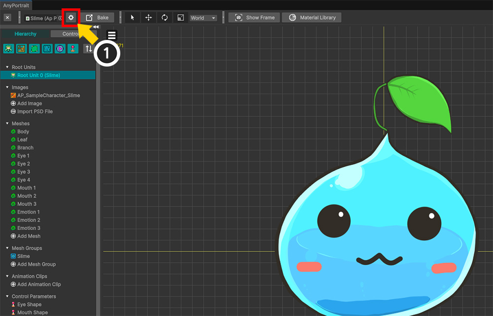
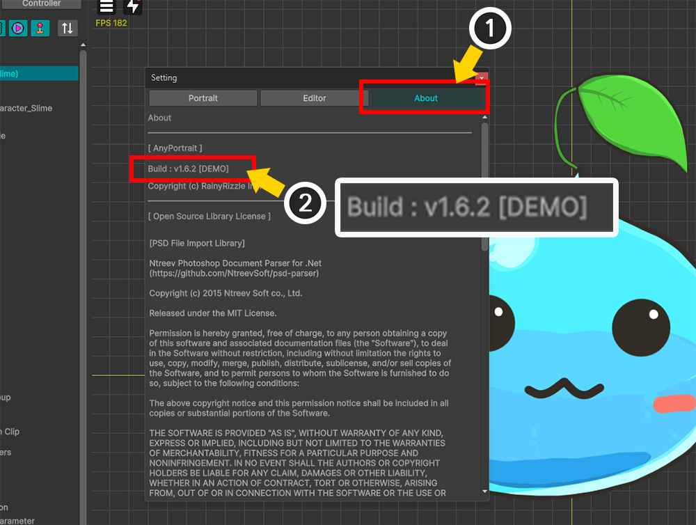
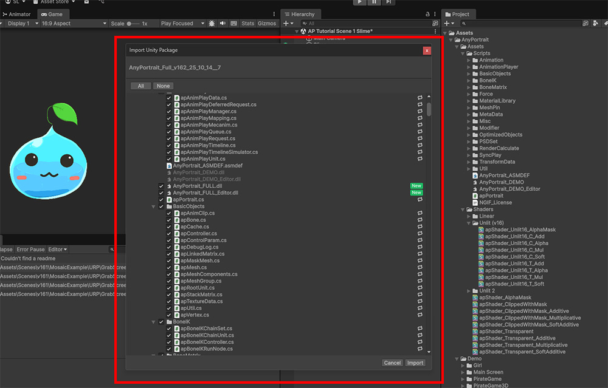
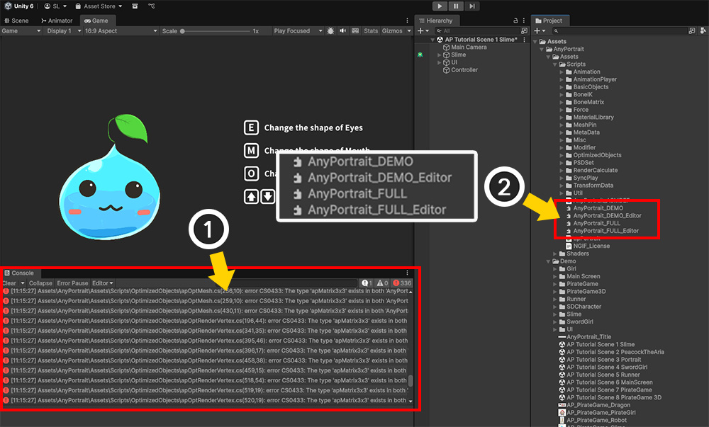
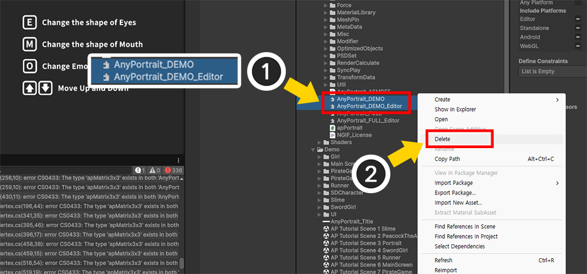
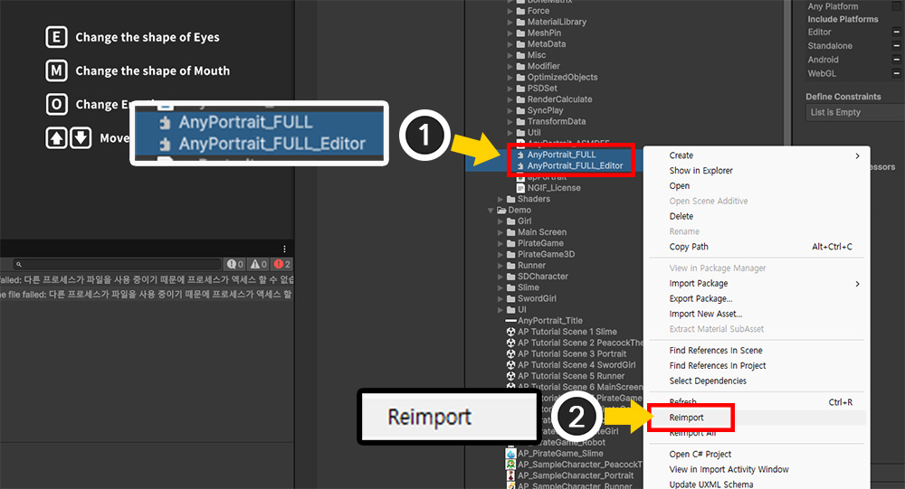
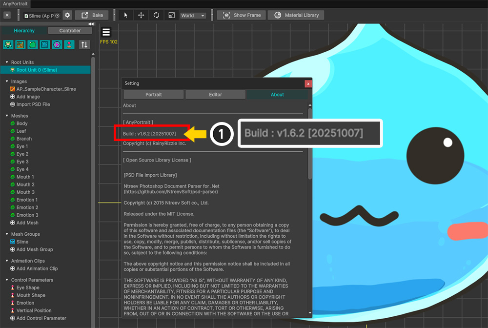

AnyPortrait > Manual > Installing the other version of AnyPortrait
Currently, AnyPortrait offers four package versions: "Store" and "Demo/Full."
If you attempt to install a different version of AnyPortrait than the one you're currently using, a script error may occur.
Furthermore, if you overwrite a package with a version that doesn't match the numeric build version, you may encounter unexpected problems.
This page explains how to check the build version of AnyPortrait and how to install a different version.
Before installing the other version of AnyPortrait, you need to check the currently installed build version.
This is because the following rules regarding build versions must be observed when installing the AnyPortrait package.
- If the build version is the same, you can overwrite a different version of the package by deleting the DLL.
- You can install it by overwriting it with a newer build version.
- If you are installing a previous build version, you must delete the existing AnyPortrait package from the Assets folder.

The AnyPortrait editor offers several UIs that allow you to check the current version.
Let's check the version in the Setting Dialog.
(1) Open the AnyPortrait editor, select a character, and click the Setting button.

(1) Select the About tab.
(2) You can check the current build version.
The notation above indicates the following:
"v1.6.2": The numeric version indicates the build version, indicating the order in which it was built. These are major, minor, and patch versions, respectively.
"DEMO": Indicates the package type. "DEMO" indicates the demo version, and "CN" indicates the version distributed in the Chinese store. For versions other than demos, the build date is indicated.

Let's learn how to install the full version purchased from the Asset Store or the demo version downloaded from the website into a project that already has AnyPortrait installed.
This example demonstrates overwriting the full version in a project that already has the demo version installed.
When you import the Unity package file into your project, the screen shown above will appear.
Click the Import button to overwrite the full version.
Caution
If you are installing an older version than the one you already have, you must first delete the files in the existing AnyPortrait package.

(1) An error message occurs when installing the package.
(2) This error message occurs because different versions of DLL files conflict with each other.
Most of AnyPortrait's code is provided as C# script files, but some scripts, such as version and validation, are stored as DLL files.
The DLL files are located in the "Assets/AnyPortrait/Assets/Scripts" folder and have different names depending on the version of the AnyPortrait package.
The names of the two files, one for the runtime and one for the editor, are as follows:
1. Full Version / Global: AnyPortrait_FULL, AnyPortrait_FULL_Editor
2. Full Version / China: AnyPortrait_FULL_CN, AnyPortrait_FULL_CN_Editor
3. Demo Version / Global: AnyPortrait_DEMO, AnyPortrait_DEMO_Editor
4. Demo Version / China: AnyPortrait_DEMO_CN, AnyPortrait_DEMO_CN_Editor
When importing the AnyPortrait package, you must delete DLL files that do not match the current version.

In this example, we're installing the Full Version, so we need to delete the DLL files from the Demo Version.
(1) Select the two DLL files ("AnyPortrait_DEMO" and "AnyPortrait_DEMO_Editor") that don't match the installed version.
(2) Delete the selected DLL files.

After deleting the DLL files and waiting a while, the scripts will be recompiled and the error will disappear.
However, if compilation was not completed properly, errors may remain or the game may not run.
(1) If compilation issues occur, select the current versions of the DLL files that you did not delete.
(2) Right-click and execute "Reimport."

You can see that the package has been successfully converted.
This method works not only for conversions between the Demo Version and Full Version, but also between the Global Store Version and China Store Version.